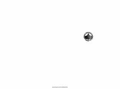

DLMahmud Koshg'ariyning mashhur turkiy tillar izohli lug'atining birinchi jildi.
Mahmud Koshg'ariyning XI asrga oid mashhur «Devonu lug'otit turk» (Turkiy so'zlar devoni) asarining o'zbek tiliga qilingan tarjimasining 1-jildi. Asar turkiy qabilalar tilini, uning fonetik va grammatik xususiyatlarini o'rganishda muhim ilmiy ahamiyatga ega.